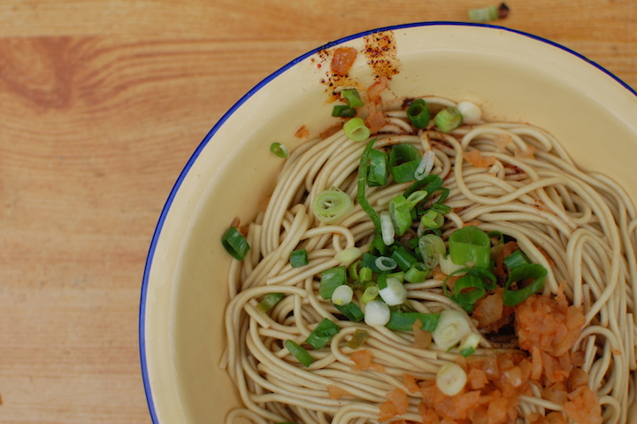
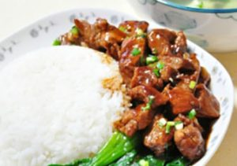
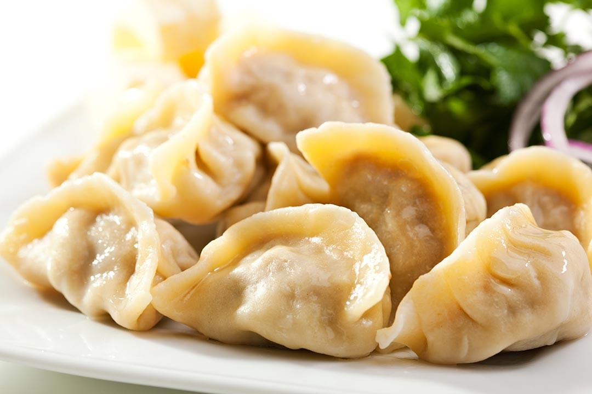

Chinese Food
Chinese food is one of the most popular types of food around the world. The large variety of flavour makes it so many different people with different tastes can all enjoy something.
Hot and Dry noodles (Breakfast)
Photo of hot and dry noodles.[1]
These noodles are a specialty of the city of Wuhan. Hot and dry noodles are different from other noodle dishes, because the fresh noodles are coated in sesame oil first. They are then cooked until tender, and after, reheated in boiling water just before serving. The noodles are served without soup which leads to the “dry” part of the name. They are then topped with condiments like garlic chives, sesame paste, pickled vegetables, and chili sauce, which leads to the “hot” part of the name.
“Covered Rice” (Lunch)
Photo of covered rice.[2]
A classic. Most people know about this combo, whether you like Chinese food or not. “Covered rice” is a portion of rice, meat, and vegetables all eaten together. This dish can be found all around China, unlike some dishes where the specialty is only found in a certain location. This is also a simple dish you can make yourself. Looking at the price, it all depends on the variation you get/make. Ones with more meat tend to cost more, and ones with cheaper materials like tofu will cost you less.
Dumplings (Dinner)
Photo of dumplings.[3]
Similar to covered rice, but even more in this case, dumplings are a food everyone knows regardless of their taste. Dumplings are a well known traditional Chinese food, originally created in the North. They are shaped like a half-moon, are soft, and made of the same dough as pasta. Dumplings are eaten all around the world, but when they transferred from the North to Southern China, they were typically made with rice instead. A staple in Chinese history, dumplings are traditionally eaten on New Year’s Eve. They are eaten at this time because it is thought to bring good fortune financially, because of the shape that resembles ingots. Dumplings are originally filled with meat, but there are many different variations in modern society of different vegetables and fillings. They are usually steamed or boiled which brings out the flavour in the soup created by the fillings.